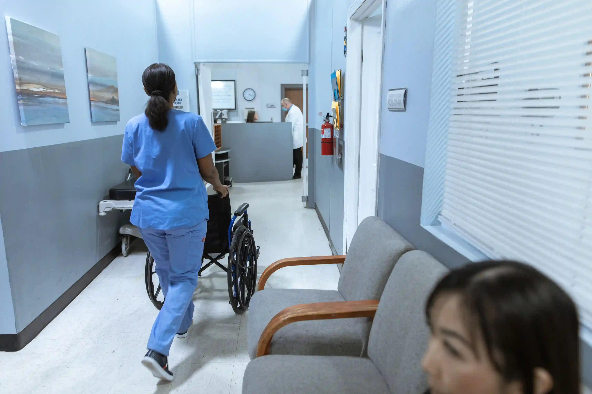
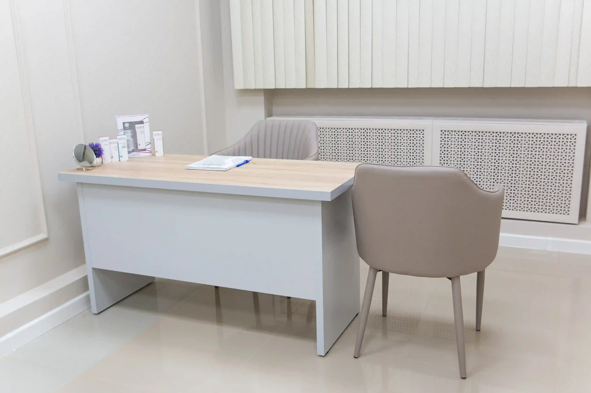

Our mission
To give every patient unhurried time with a doctor, clear answers and a plan they can follow.
- Appointments that start on time
- Results explained in plain language
- One record shared across departments
Our story since 2008
Stackly Clinic began with one frustration: good doctors, rushed appointments. Eighteen years on, every visit still starts with listening.


What we promise
We believe good medicine begins with a good conversation: unhurried, honest and in words you can actually follow.
To give every patient unhurried time with a doctor, clear answers and a plan they can follow.
To be the clinic families choose for life, from a child's first vaccination to a grandparent's routine check-up.
Our journey
Two consulting rooms, three doctors and one rule: nobody is rushed.
Blood work happens in the building, so results no longer mean a second trip.
ECG, echo and treadmill tests arrive with same-day reports.
Prescriptions and reports reach patients' phones, and the paperwork queue disappears.
Designed so children walk in curious instead of scared.
Eight specialist doctors later, appointments still start within 10 minutes of schedule.
Five commitments behind every appointment, every answer, every room.

Every consultation begins with your story, not a checklist. Most diagnoses start with what you tell us.
If you can't repeat it to your family, we haven't explained it well enough.
Upfront pricing and cashless claims with most major insurers — no surprise bills.
One record, one team — you never have to repeat your history.
Soft light and quiet rooms so every conversation happens without pressure.
Our team
Three of our 8 specialists. Each keeps time aside in the day to answer your questions.
Book appointment
Known for explaining results without jargon. Looks after long-term conditions, check-ups and second opinions.

Leads our cardiology wing, where ECG, echo and treadmill tests come with same-day reports.

Makes the paediatric room feel like a playroom, so children and parents both relax.
Inside the clinic
Quiet rooms, bright corridors and every test in the same building.




Visit us
Book a visit and meet the team. We confirm within 30 minutes during opening hours.